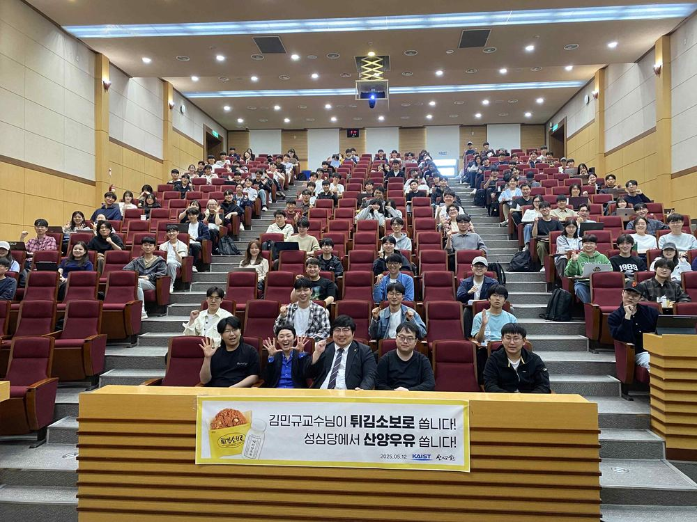

대회를 넘어선
학문적 결실
한 세대의 학습 경험이 다음 세대의 자산으로 누적되는 구조. 수상자 공동체의 도서 출판, 학술 논문 게재, 법학공부방법 연구로 이어진 실질적 결실입니다.
수상자 공동체의 법학 서적 출판
수상자들의 협업이 결실을 맺어 7권의 도서가 출판되었으며, 3권의 책을 추가 저술 중입니다. 한국 법학 교육에서 흔치 않은, 학부 재학생·대학원 재학생·학사 졸업자가 한자리에 모여 협업하는 구조입니다.
등재 학술지 논문 게재
수상자들은 KAIST 교수진의 지도 하에 등재 학술지에 3편의 논문을 게재하였으며, 4편의 후속 논문을 작성 중입니다.
학부생·졸업생이 등재 학술지에 논문을 게재하는 것은 한국 학계에서 매우 드문 사례이며, 이는 본 대회가 단순한 시험을 넘어 실질적 학문 공동체로 기능하고 있음을 보여줍니다.
전국 자기주도 학습법 공모전
본 대회는 시험 그 자체를 넘어 학습 방법론의 공유와 누적을 추구합니다. 응시자들이 한 해 동안의 자기주도 학습법을 정리해 공유하는 '제1회 전국 자기주도 학습법 공모전'을 2025년 9월 20일 제5회 시상식과 함께 시행하였습니다.
이는 단순히 시험 성적을 넘어, 한 세대의 학습 노하우가 다음 세대의 학습 자산으로 누적되는 순환식 교육 구조의 핵심 장치입니다. 제1회 공모전은 2025년 9월 제5회 법학경시대회와 함께 시상식이 개최되었습니다.
AI 시대 법학공부방법 연구
본 대회 운영 과정에서 축적된 교육공학·인지과학적 통찰은 구체적인 학습기기 연구로 이어지고 있습니다. 현재 다음 두 건의 연구 성과를 정리하여 특허 출원을 준비 중입니다.
대상 수상자들의 진로
대회 수상이 단발성 이력에 그치지 않고 실질적 성장으로 이어지고 있습니다. 회차별 대상 수상자들의 진로는 본 대회의 인재 발굴 기능을 보여줍니다.
제4회 대상 박상영 학생,
서울대학교 대학원 법학과 합격
제4회 대회 대상자 박상영 학생(고려대 졸업)이 2026학년도 전기 서울대학교 대학원 법학과 석사과정에 합격했습니다. 본 대회의 학습 경험이 서울대 대학원 진학으로 이어진 구체적 사례입니다.
"법학경시대회는 앞으로의 공부 방향에 있어 필요한 통찰을 제공해 주었고, 민사법 사례형을 직접 써 보는 연습이 서울대학교 대학원 법학과 입학으로 이어진 빛이 되었다고 확신합니다." — 박상영 학생, 2025년 12월 31일

사회 기여 활동
법학경시대회 운영진과 수상자 공동체는 학문적 성취를 사회로 환원하고 있습니다. 2025년 5월 12일에는 대회 수익금을 활용하여 KAIST 법 과목(기업가를 위한 법) 수강생들에게 성심당 튀김소보로 400인분과 산양우유 400개를 기부하였습니다.

2025. 5. 12. KAIST 터만홀 · 본 대회 수익금 환원 (튀김소보로 400 + 산양우유 400)